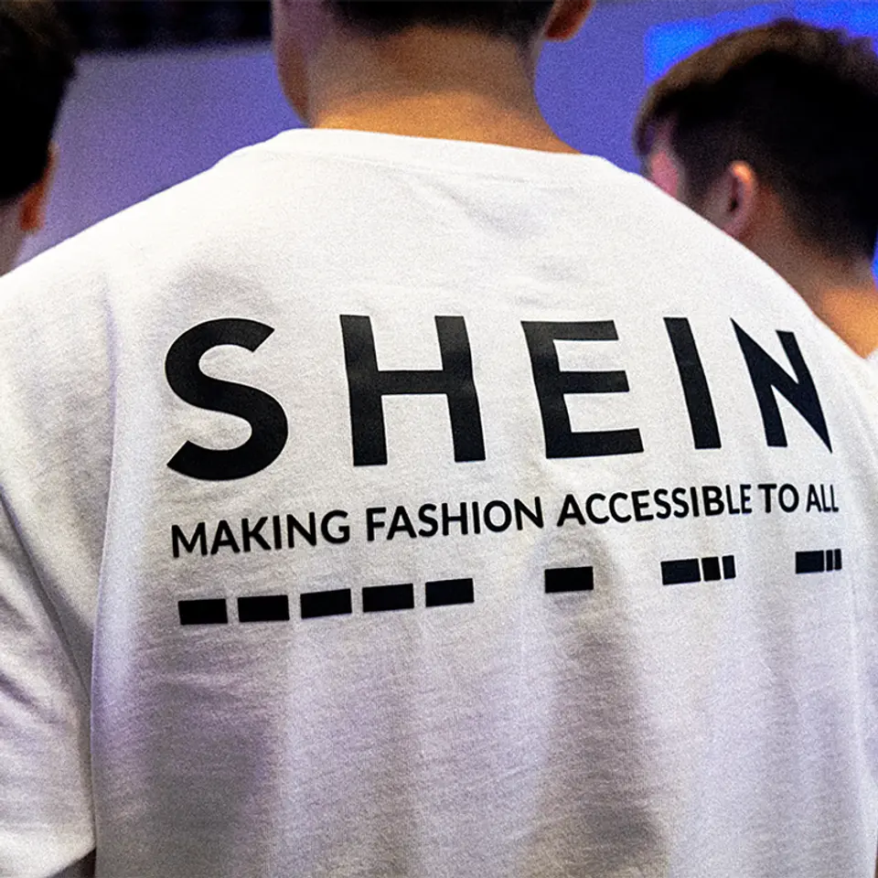

01
【世界2位】ついに上場。SHEINは最強アパレルなのか
発行日時：2026年9月7日 05:30 JST ・ NewsPicks編集部

あなたに関係ありそうな理由
成長率や原価だけでなく、調達網の透明性が資本コストやブランド価値にどう跳ね返るかを考える材料になるためです。
概要
この記事は、9月1日に香港市場へ上場したSHEINを、売上規模だけでなく、成長の減速、在庫効率、規制・労務の説明責任まで含めて読む。SHEINは160市場で展開し、2025年の売上高は418億ドル、アクティブユーザーは2億7300万人に達した。売上規模ではスポーツブランドを除くアパレルで世界2位とされる一方、上場時の評価額は約4.2兆円で、2022年の約1000億ドル規模の評価から大きく下がった。記事は、この差を単純な成長株の値付けではなく、成長率・収益性・規制リスクを市場がどう見るかの問題として扱う。2023年から25年にかけた売上成長率は鈍化し、2026年1〜3月期の営業利益率も前年同期より下がった。米国では少額輸入品への制度変更が価格に影響し、地域構成の変化も課題になる。他方、同社の強さは、生産量を小さく始め、反応を見て補充するLATRの仕組みにある。約7500社のサプライヤー網を使い、1日約4700の新商品を出し、在庫日数は38日とされる。売れ残りを抑える仕組みは資金効率に効くが、供給網が巨大になるほど、誰がどの条件で働くかを説明する負担も増える。記事は、マーケットプレイス、ブランド支援、Everlane買収などで事業を広げる動きにも触れる。表示コメントでは、売上や時価総額だけでなく、外注先の労働条件や情報開示の弱さが投資家にとってのコストになるという指摘、低価格の裏側を消費者も見るべきだという意見が出た。結論は、速く安く作れることだけでは、長期の企業価値を決められないということだ。成長施策と同じ粒度で、調達の可視化、規制対応、苦情を受け止める仕組みを示せるかが問われている。米国での制度変更に対応して価格や地域構成を変えるだけで、問題が解けるわけではない。上場で得た資金を技術、ブランド認知、海外展開へ配分する計画と並行して、調達先を追跡し、是正の進捗を確認し、問題が起きた時に公開説明できる運用を示せるかが、今後の評価を左右する。その説明は短期の評判対策ではなく、出荷量や広告費と同じ経営指標として追うべきだ。投資家と消費者の双方が、成長の数字と説明の質を一緒に測る局面に入っている。
仕事や会話で使える一言
「速く安く作る強さは、説明できる調達と一体でなければ企業価値になりにくいです。」
NewsPicks原文を読む
02
【朗報】ベンチャー株「売れる時代」が今秋始まる
発行日時：2026年9月7日 05:30 JST ・ NewsPicks Desk
あなたに関係ありそうな理由
資金調達、ストックオプション、人材の流動性を考える時、上場だけに頼らない出口の設計がどこまで実務化するかを見通す材料になるためです。
概要
この記事は、SaaS企業smartroundの子会社であるSmartround Securitiesが、未上場株を対象にした証券仲介を今秋にも始める計画を紹介する。8月21日に第一種金融商品取引業者として登録され、手続きが整えば、既に発行済みのベンチャー株を既存株主が売る「セカンダリー」の取引を扱う。これは会社が新株を発行して資金を得るプライマリーとは違い、創業者、従業員、VCなどの保有者が買い手へ持ち分を移す仕組みである。対象となる買い手は特定投資家などに限られるが、これまで個別の相対交渉に頼り、価格発見や相手探しが難しかった市場に、競合する買い手を見つける仲介を持ち込む狙いがある。背景には、投資から約10年で満期を迎えるVCファンドが、今後2〜3年で約200本に達すると見込まれることがある。上場を急いで売却機会を作る圧力を和らげ、成長に必要な時間を確保する選択肢になり得る。記事は、上場前にストックオプションを行使・売却できれば、従業員が株価の不確実性を抱え込まずに済む可能性にも触れる。ただし契約上の条件や社内ルールが必要で、日本では前例がまだ多くない。smartroundは約7600社のスタートアップと4000〜5000人の投資家が使うSaaS基盤を持つが、取引を画面だけで完結させる交換所を目指すわけではない。契約、株主名簿、資本政策が案件ごとに違うため、投資銀行のように人が支える仲介を想定する。表示コメントには、市場を作るだけで企業の成長力が生まれるわけではなく、投資対象の質と規模が要るという注意、制度開始後も解くべき課題が残るという声があった。流動性は万能薬ではないが、資金・人材・上場時期の選択肢を増やすインフラとして、実際の成約価格と参加者の保護を見ながら評価したい。東京証券取引所のグロース市場では、2030年から上場5年後に時価総額100億円を求める改革も予定される。上場を唯一の到達点としない資本政策が必要になるほど、売り手が急ぐあまり情報の非対称性や従業員の不利益を生まないかを、取引ごとに確かめる必要がある。価格の妥当性を判断する材料が、売り手と買い手に偏らないことも重要だ。
仕事や会話で使える一言
「売り場をつくるだけでは足りず、株主・契約・企業価値を見極める仕組みまであって初めて流動性になります。」
NewsPicks原文を読む
03
【疑問】東京はコスパ悪い？日本一幸福な県で本気で考えてみた
発行日時：2026年9月7日 05:30 JST ・ 宇津木 風南
あなたに関係ありそうな理由
勤務地、採用、拠点づくりを考える時、給与や家賃だけでは測れない生活の余白と働く実感をどう見るかの材料になるためです。
概要
この記事は、東京と福井を対立させるためではなく、収入、生活費、家族支援、仕事の手応えを同じ表に置いた時に、暮らしの選択がどう変わるかを考える。東京23区の30平方メートル以下の単身向け賃貸の平均募集賃料は、2026年6月に管理費込みで11万4242円だった。記事が参照する比較では、東京は手取り額で首位でも、基本的な生活費を引いた「経済的ゆとり」は11万7622円で19位となる。福井は手取りが東京より約3万円少ない一方、残る余白は東京を約1万5000円上回るという。福井は日本総合研究所の都道府県幸福度ランキングで1位とされ、共働き率は61.2％で全国1位、3世代同居や育児・介護を支える近さも生活コストと時間の見え方に関わる。眼鏡フレームや繊維、電子部品などの産業があり、就業率は100カ月連続で全国1位と紹介される。東京は仕事の選択肢や労働生産性で強い一方、記事は「働く人の幸福度」が必ずしも同じ順位ではない点に注目する。表示コメントでも、問うべきは賃金と家賃の差だけでなく、どんな生活や価値観に合うかだという意見、地方では職種やキャリアの質を確保する仕組みが必要だという指摘が出た。福井を理想化し、東京を否定する記事ではない。人口規模、家族構成、通勤、専門職の機会は人によって異なる。だからこそ、移住や拠点戦略を「家賃が安い」という一指標で決めず、仕事の継続性、地域とのつながり、子育てやケアの支援、本人が成長を感じられる仕事かを一緒に確かめる必要がある。給与の額面と、暮らしの中で使える時間・お金・安心感を分けて比べる視点が残る。記事は、待機児童ゼロや不登校の少なさなど、家計だけでは可視化しにくい条件にも触れる。東京に集中する専門職の機会を手放すコスト、地方で職を変えた時に次の選択肢が見つかるかというリスクも、家族の好みとは別に確認が要る。暮らしの評価を平均値で終わらせず、自分に必要な支援と、将来も選べる仕事を具体的に書き出して比べたい。地域の平均ではなく、自分の職種、家族の事情、移動手段に照らした比較が欠かせない。転居後に何が変わるかも、定期的に条件を更新しながら見直したい。その前提を明確にしたい。
仕事や会話で使える一言
「額面の年収ではなく、選べる仕事と生活に残る余白をセットで比べたいです。」
NewsPicks原文を読む
04
【論文】グーグルが起こした新たな「革命」
発行日時：2026年9月7日 05:30 JST ・ The New York Times（NewsPicks掲載）
あなたに関係ありそうな理由
AIの予測精度を業務で使う時、モデルが早く知らせることと、人が避難・停止・配分を決める責任をどう分けるかを考える材料になるためです。
概要
この記事は、GoogleのAI気象モデルがハリケーン予測にもたらした変化を、2025年のハリケーン・メリッサと、2026年8月のNature論文を通じて伝える。米国立ハリケーンセンターは2025年初めからAIモデルを取り入れ、メリッサについては、ジャマイカに上陸する3日前の段階でカテゴリー1から5への急速な発達を予測できたという。記事によれば、2023年から25年の数百の予報を比較した研究で、Googleのモデルは進路、強度、規模の各面で、広く使われる欧州中期予報センターのモデルを平均1日超先行して上回り、5日先の進路予測では30時間超の先行が示された。メリッサは2025年10月28日に最大風速時速185マイルでジャマイカに上陸し、予測しにくい進路や速度の変化もあった。早い警報は、病院の避難、送電停止、行政の準備に余地を作る。だが記事は、AIが予報官を置き換えたとは描かない。衛星やハリケーンハンターの観測を受け、最終的な警報を出すのは人であり、モデルの出力を比較して意思決定する体制がある。表示コメントにも、AIの価値は予測の自動化そのものより、人が判断するための時間を作ることにあるという意見、既存の欧州モデルとの性能比較への注目があった。ここでの教訓は、精度の高い出力をそのまま結論にしないことだ。どの不確実性を残すのか、誰が止める・逃がす・知らせる判断をするのか、誤報と見逃しのコストをどう事前に決めるかまで設計して初めて、予測の速さが社会の安全につながる。AI導入の成否は、モデル単体ではなく、観測、説明、現場の行動を結ぶ運用で決まる。メリッサは異例の進路やゆっくりした移動も含む事例で、1回の成功だけを一般化してはいけない。過去の実績を比較可能な形で示し、予報官がモデル間の違いを説明でき、現場が異論を出せる状態を保つことも、導入の安全性に含まれる。予測を使う組織には、判断の根拠と結果を後から検証できる記録も必要になる。実際の警報と現場の対応を継続して照合し、利点と限界を公開する視点が要る。予測精度だけでなく、行動までの時間短縮を測る基準も持ちたい。その訓練や連絡網も事前に検証したい。
仕事や会話で使える一言
「予測が速くなっても、いつ誰が行動を決めるかは人の設計として残ります。」
NewsPicks原文を読む
05
【世界のニュース７選】ドイツ極右が過去最高の得票
発行日時：2026年9月7日 17:00 JST ・ The world in brief
あなたに関係ありそうな理由
国際情勢を一つの見出しで終わらせず、政治・物流・資源・自然災害の同時進行が事業や生活へどう波及するかを見渡す材料になるためです。
概要
この記事は、The Economistの世界ニュースを七つにまとめ、地域ごとに別の出来事として見えるニュースが、政治の不安定さ、物流、資源、安全保障という複数の経路でつながることを示す。ドイツでは、反移民などを掲げる「ドイツのための選択肢」が東部ザクセン・アンハルト州の議会選挙で予測得票率44％を得て、過去最高の結果となった。単独で政権を担える議席を得るかはなお不透明だが、2029年までの連邦議会選挙を見据える動きとして注目される。米国ではマイアミ国際空港でアマゾンの貨物機が着陸時にオーバーランして炎上し、死傷者が出た。航空インフラの混乱は、報道上の事故にとどまらず、物流の連続性を考える材料になる。ウクライナをめぐってはゼレンスキー大統領と米国側の会談に進展がなく、冬を越える戦争継続の見通しが伝えられた。米国とイランの間では石油タンカーへの攻撃・対抗が報じられ、ホルムズ海峡周辺の緊張がエネルギーと海運のリスクになる。ノルウェーからのIsar Aerospaceの打ち上げ、国有金融機関への中国の資本注入、アナク・クラカタウの噴火でジャカルタを含む空港が閉鎖されたことも並ぶ。表示コメントでは、ドイツ政治の変化を現地の空気から懸念する声が出た。七つの記事は同じ因果で結ばれているわけではないが、単発の出来事として消費しない方がよい。選挙結果は政策や社会の分断へ、海上の緊張は保険・輸送費や物価へ、火山噴火は航空便と人流へ、それぞれ別の時間差で影響する。重要なのは、予言をすることではなく、誰の安全、どの供給網、どの地域の政治判断に影響が及ぶかを分けて追うことだ。日々のニュースを比較する時には、確定した事実と今後の見通しを同じ重さで扱わない姿勢も必要になる。宇宙ではIsar Aerospaceがノルウェーから打ち上げを行い、中国は国有金融機関へ大規模な資本注入を決めた。国際ニュースは、安全保障だけでなく、技術の基盤、資金の流れ、交通の途絶という異なる影響経路を同時に持つ。自分に関係する経路を見失わないためにも、確定事項と推測、短期の混乱と長期の変化を分けて記録したい。異なる地域の出来事を、同じ速度や同じ重要度で扱わないことも大切である。
仕事や会話で使える一言
「世界の出来事は一つの結論にまとめず、影響する場所と時間差を分けて追いたいです。」
NewsPicks原文を読む